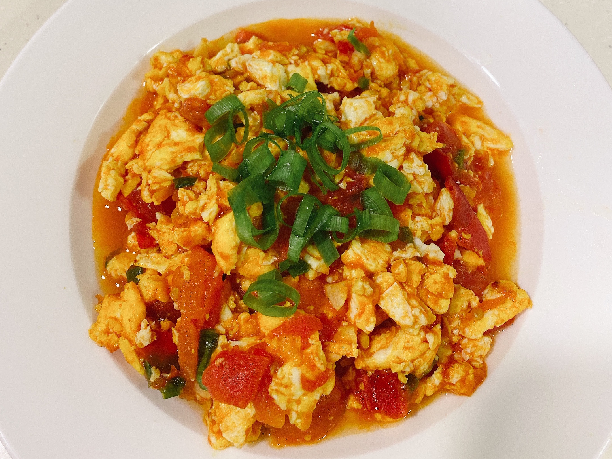

Stir-fried tomato and scrambled eggs

Description
Stir-fried tomato and scrambled eggs is a classic Chinese home-style dish
beloved for its simplicity, vibrant color, and comforting flavor. The dish
features soft scrambled eggs and juicy tomatoes stir-fried together with a
touch of salt, sugar, and sometimes scallions or garlic. The eggs are
first cooked until fluffy and golden, then briefly set aside while the
tomatoes are quickly stir-fried to release their tangy-sweet juices.
Everything is then combined, creating a warm, slightly saucy mixture that
pairs perfectly with steamed rice.
Despite its humble ingredients, this dish holds a nostalgic place in many
Chinese households, often being one of the first recipes learned by young
cooks. It strikes a balance between sweet and savory, soft and juicy,
making it appealing to people of all ages. Whether served at lunch or
dinner, stir-fried tomato and scrambled eggs is a timeless comfort food
that brings a taste of home.
Ingredients
- Eggs – 3 to 4 large
- Tomatoes – 2 medium (or 3 small), ripe
- Salt – ½ tsp (to taste)
- Sugar – ½ tsp (optional, balances acidity)
- Cooking oil – 1 to 2 tbsp (vegetable or peanut oil)
- Scallions – 1 stalk, chopped (optional, for added aroma)
- Garlic – 1 clove, minced (optional, for extra flavor)
- Water – 1 to 2 tbsp (optional, to make it saucier)
Steps
- Prep ingredients
- Beat 3–4 eggs with a pinch of salt.
- Cut 2 tomatoes into wedges.
- (Optional: mince garlic, chop scallions.)
- Cook the eggs:
- Heat oil in a pan.
- Pour in the beaten eggs and scramble gently until just set.
- Remove eggs and set aside.
- Cook the tomatoes:
- Add a bit more oil if needed.
-
Stir-fry tomatoes over medium heat until soft and juicy (2–3 minutes).
- Add salt and a little sugar to taste.
- Combine and finish:
- Return eggs to the pan.
-
Stir-fry everything together for 30–60 seconds until well mixed.
-
(Optional: add a splash of water or scallions for extra flavor.)
- Serve hot with steamed rice. Done!
Home